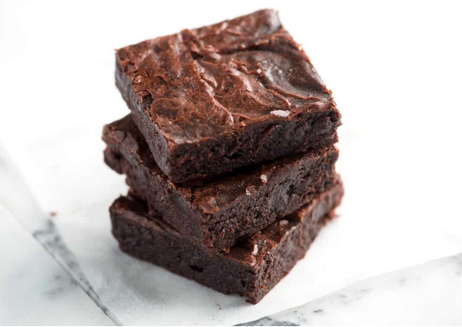

Brownies

This is the perfect recipe to try out when you are craving chocolate but don't have too
much energy/time. It's fairly simple to make and will satisfy all your cravings!
This recipe was sourced from Inspired Taste
Ingredients:
- 10 tablespoons butter
- 1 1/3 cups sugar
- 3/4 cup + 2 tablespoos unsweetened cocoa powder
- 1/4 teaspoon kosher salt
- 1 teaspoon vanilla
- 2 large eggs
- 1/2 cup flour
Steps:
- Preheat oven to 325 degrees F and line an 8x8 inch baking pan with parchment paper
- Prepare a double-boiler by filling a medium saucepan with water about 2 inches deep. Heat the water until barely simmering.
- Combine the butter, sugar, cocoa powder, and salt in a medium heat-safe bowl. Rest the bowl over the simmering water. If the bottom of the bowl touches the water, remove a little water from the saucepan.
- Stir the mixture occasionally until the butter has melted and the mixture is quite warm.
- Remove the bowl from the saucepan, and set aside for 5 minutes or until it is only warm, not hot.
- Stir in the vanilla.
- Add the eggs, one at a time, stirring vigorously after each one.
- Add the flour and use a spoon to beat the flour into the batter until it is very thick and pulls away from the sides of the bowl.
- Spread the batter evenly in the prepared pan.
- Bake the brownies until the edges look dry and the middle looks slightly underbaked; 20 to 30 minutes.
- Cool completely before removing from the pan. Enjoy your brownies.
Home